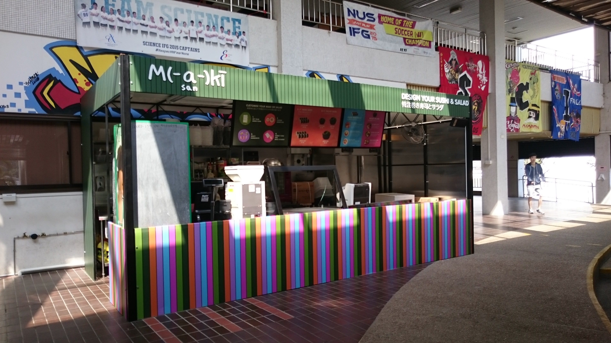
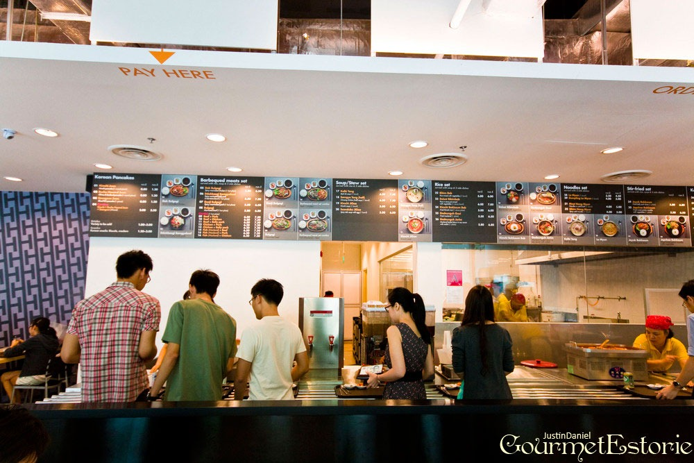
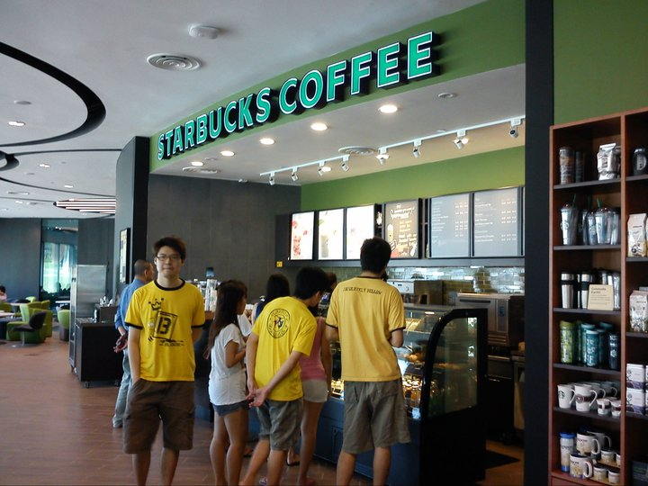
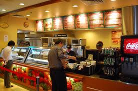
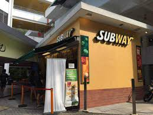
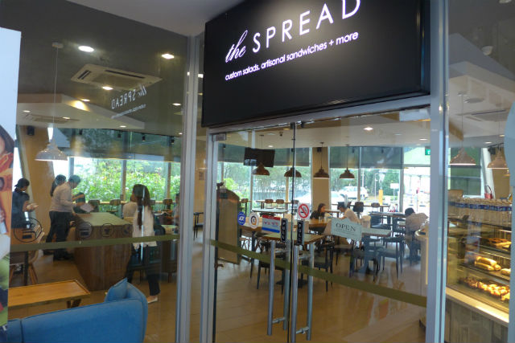
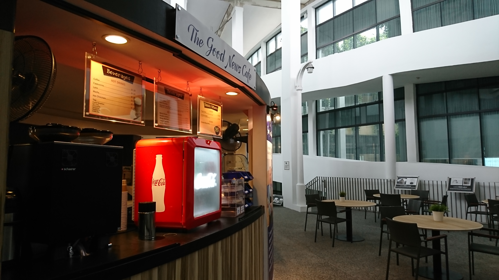
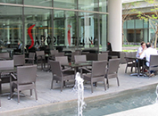
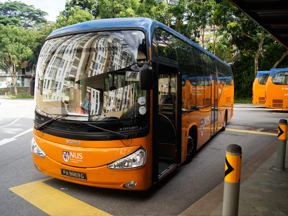
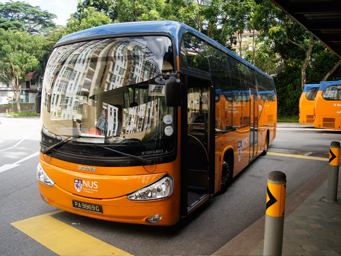

With this interactive map, users will be able to view the various canteens and food outlets in NUS.
There are various map markers that are scattered throughout the map. Users can hover their cursor over those map markers to see more information. The locations of the food outlets can be toggled on and off.
Clicking on the NUS Interactive Food Map title at the top of the page will bring you to the food and beverages website.
Legend:
- Location of bus stops
- Location of canteens

- Location of additional non-canteen outlets

 Location: Stephen Riady Centre, UTown
Location: Stephen Riady Centre, UTownShuttle Bus: D1/2, UT-CLB, UT-FoS
Operation hours: Daily 7.30am to 10.00pm
Stalls:
- Astons
- Fishball Story
- Ayam Penyet
- Ban Mian
- Nasi Padang
- Indian Cuisine
- Mini Wok
- Japanese Cuisine
- Drinks & Snacks
Shuttle Bus: A1/2/E, B, C, D1/2
Operation hours:
Mon-Fri 7.30am to 4.00pm
Sat 7.30am to 3.00pm
Stalls:
- Houhang Fish Ball Minced Meat Noodles
- Freshly Made Soya Milk
- Indian Food
- Western Food
- Chicken Rice
- Chinese Cooked Food
- Indonesian Panggang
- Kaneda Japanese Cuisine
- Drinks and Snacks
Shuttle Bus: A1/2, B, D1
Operation hours:
Mon - Fri 7.30am to 4.00pm
Sat 7.30am to 3.00pm
Stalls:
- Vietnamese Cuisine
- Hainanese Chicken Rice
- Fruits and Juices
- Mixed Vegetable Rice
- Western Food
- Korean Cuisine
- Qiu Yin Ban Mian
- AZA Muslim Food
Shuttle Bus: A1/2/1E/2E, C, D2
Operation hours:
Mon-Fri 7.30am to 4.00pm
Sat 7.30am to 3.00pm
Stalls:
- Yummy Chicken Rice
- Chinese Noodles
- Uncle Penyet Indonesian Panggang
- Drinks and Snacks Corner
- Western Food
Shuttle Bus: D1/2, UT-CLB, UT-FoS
Operation hours:
Mon-Fri 7.00am to 10.00pm
Sat & Sun 10.00am to 10.00pm
Stalls:
- Noodle House
- Yong Tau Foo
- Fruits & Dessert
- Drinks & Dim Sum
- Mixed Veg Rice
- Ayam Penyet
- Halal Western
- Mala Xiang Guo
- Salad & Pasta
Shuttle Bus: A1/2/1E, B1, BTC1, C, D1/2
Operation hours:
Mon-Fri 7.30am to 8.00pm
Sat 7.30am to 3.00pm
Stalls:
- Thai Cuisine
- Yong Tau Foo & Laksa
- Mixed Vegetable Rice
- Ban Mian & Fish Soup
- Korean Cuisine
- Drinks & Snacks
- Fruit & Juices
- Indian Cooked Food
Shuttle Bus: A1/2, BTC1, D1
Operation hours:
Mon-Fri 7.30am to 4.00pm
Sat 7.30am to 3.00pm
Stalls:
- Drinks & Snacks
- Indonesian Express
- Yong Tau Foo & Laksa
- Noodle
- Japanese
- Indian
- Muslim
- Western
- Claypot Seafood Soup
- Sin Kee Chicken Rice
- Fresh Fruits & Juices
- Vegeterian
- Liang Ban Kung Fu
- Snacks & Fried Kway Teow
- Chinese Cooked Food
Shuttle Bus: A1/2, BTC1, D1
Operation hours:
Mon-Fri 8.00am to 11.00pm
Sat-Sun 8.00am to 9.00pm
Seating Capacity: 146
Maki-San Mobile Cart  Location: LT 25
Shuttle Bus: A1/2/1E/2E, C, D2
Operation hours:
Mon-Fri 11.00am to 6.00pm
Weekends & PH Closed
Seating Capacity: -
Platypus Food Bar
 Location:
Science Blk S16
Location:
Science Blk S16Shuttle Bus: A1/2/1E/2E, C, D2
Operation hours:
Mon-Fri 8.30am to 8.00pmpm
Sat 8.30am to 2.00pm
Seating Capacity: 100
Hwangs Korean Restaurant  Location: Town Plaza
Shuttle Bus: D1/2, UT-CLB, UT-FoS
Operation hours:
Mon -Sat 10.00am to 10.00pm
Seating Capacity: 114
Starbucks  Location: Education Resource Centre
Shuttle Bus: D1/2, UT-CLB, UT-FoS
Operation hours:
Mon -Sat 10.00am to 10.00pm
Seating Capacity: 114
Subway  Location: Town Plaza
Shuttle Bus: D1/2, UT-CLB, UT-FoS
Operation hours:
Mon -Sat 10.00am to 10.00pm
Sun 10.00am to 9.00pm
Seating Capacity: 73
Subway  Location: Yusof Ishak House
Shuttle Bus: A1/2/1E, B1, BTC1, C, D1/2
Operation hours:
Daily 8.00am to 8.00pm
Seating Capacity: -
The Spread  Location: Mochtar Riady Building
Shuttle Bus: A1/2, B, D1
Operation hours:
Mon - Fri 7.45am to 8.45pm
Sat 8.00am to 2.30pm
Seating Capacity: 100
The Good News Cafe  Location: Ventus
Shuttle Bus: A2/2E, B, D1
Operation hours:
Mon - Fri 7.30am to 6.30pm
Seating Capacity: -
Sapore Italian Restaurant  Location: Town Plaza
Shuttle Bus: D1/2, UT-CLB, UT-FoS
Operation hours:
Daily 11.00am to 10.00pm
Seating Capacity: 122
 Shuttle Bus Stop

Location:
University Town
Shuttle Bus Stop

Location:
University TownShuttle Bus: D1/2, UT-CLB, UT-FoS
Shuttle Bus Stop
Location:
Yusof Ishak HouseShuttle Bus: A1, B, D1, BTC1
Shuttle Bus Stop
Location:
Faculty of ScienceShuttle Bus: A1/E, C, FOS-UT, D2
Shuttle Bus Stop
Location:
School of ComputingShuttle Bus: A1/2, B, D1
Shuttle Bus Stop
Location:
Computer CentreShuttle Bus: A2/E, B, D1